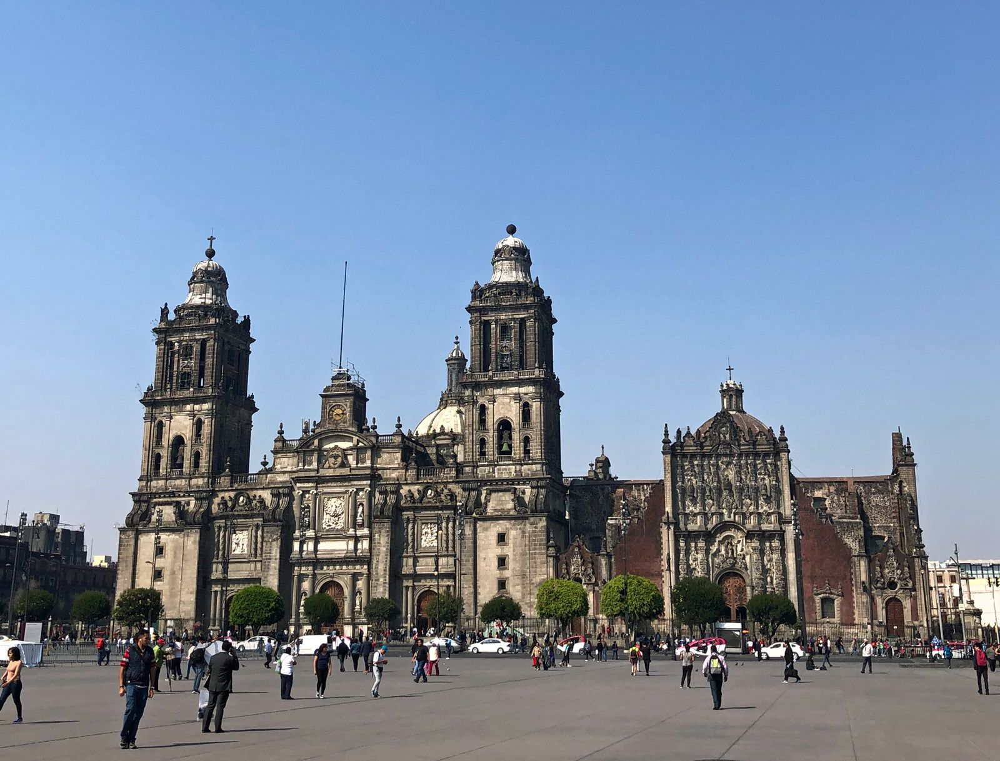

太平洋とメキシコ湾に面している
カンクン（有名なリゾートビーチ）
マヤ語で「カン」は蛇、「クン」は巣という意味があり、合わせて「蛇の巣」という意味がある。
メキシコの街並み特に、「グアナファト」という所では昼はカラフルな街並み、夜はキラキラと輝く綺麗な景色が楽しめる。
メキシコの気候 5～10月が雨季、11～4月が乾季で北半球にあるので、寒い時期、暑い時期が日本と同じ
雨季は昼間晴れていても夕方に雷雨にあうことが一般的である
また、ハリケーンが襲来し、カリブ海やメキシコ湾岸に被害が出ることもある

日本ではウーパールーパーの名前で知られているメキシコサンショウウオ

しかし、生息地の開発によって水質汚染がおきたり、外来生物が持ち込まれたりして絶滅の危機に瀕している・・・
※日本で販売されているウーパールーパーは全て国内で養殖されている
生物の保護の取り組みに力を入れ、自然環境を守ろうとしている
エル・ビスガイノのクジラ保護区
毎年12月から3月にかけてアラスカからくるコククジラの繁殖地になっている。
※過度なホエールウォッチングによって環境が悪化したため現在、観光客を規制している。
NAFTA発足以降、アメリカととの関係が深まり、輸入全体の約44％、輸出全体の約82％を占める
スペイン領だった背景より、スペインのバロック建築と現地人の美意識が混ざった古い建物が残されている
※メキシコでは多くの地域でスペイン語が話されている
※また、スペインの影響でメキシコ国民の約7割がキリスト教のカトリックである。
映画「リメンバーミー」で有名な「死者の日」が毎年11月1日～11月2日の二日間で行われます。
11月1日には子供の魂が戻ってくるといわれ、11月2日には大人の魂が戻ってくるといわれています。
ちなみに、2003年にユネスコ無形文化遺産に登録されました。
メキシコで横行している女性への差別や蔑視が元となる殺害「フェミサイド」がある。
夫やパートナーなどに殺害される女性は毎年900人もいる。

↑もう一人も殺させない！と書かれたモニュメント
2024年6月に行われた選挙で、史上初となる女性大統領が誕生したように、政治の場への女性の進出が広がっている。
先住民の地域を回り、女性の意識改革を図るプログラムを開いていたり、政治への参加や社会的地位が高い女性を増やして、尊厳が守られる社会を実現しようという運動が行われたりしている。